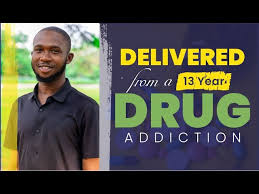
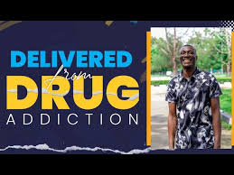
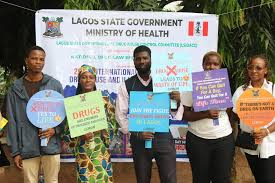

i'm a living testimonies thanks to NIDA
After 13years of drugs addiction,i am now living free and healthy

Be a resilience person
what i will say is never give up,even when things are tough

Say no to illicit drugs.
join us in spreading awareness to create a drug free future.
be it adult,children,families and societies
Prevention and Education
There are a variety of strategies that can be used to prevent the use of illicit drugs
and educate people about the potential harms of using them.
This strategies includes;
- build community knowledge of drug-related harms
- restrict the availability of illicit drugs
- engage communities and stakeholders in the development of prevention programs
Young people
There are many reasons why young people use illicit drugs includes;
- Relax
- be sociable
- escape boredom
- avoid painful situations
Young people are less likely to use alcohol and other drugs,if they can keep them busy with activities like school or sport
and network (family and friends).Education on the harms of drug use is useful but needs to be part of a hoolistic approach that incorporates other element